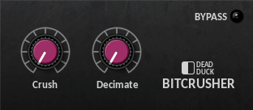
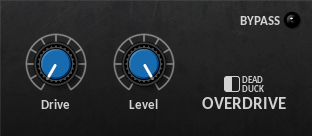
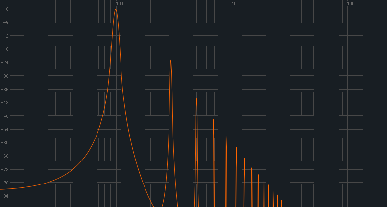

Distortion¶
BitCrusher¶
A bit-crusher effect for lo-fi distortion.
The following controls are provided:
Crush - set the bit depth of the input from 16 bits down to 1 bit.
Decimate - set the apparent sample rate of the input from 44.1 kHz down to 689 Hz. This is independent of the actual sample rate in use.
Overdrive¶
An overdrive distortion effect.
The following controls are provided:
Drive - set the overdrive level from 0 to 100%.
Level - set the output gain from -inf to 0 dB.
Overdrive provides a subtle distortion effect by adding odd harmonics to the input signal. Note that extra harmonics will be added even when the drive level is set to zero; use higher values to boost the distortion.
Passing a 100 Hz sine wave through the effect produces the following frequency spectrum:
Note the additional harmonics at 300 Hz, 500 Hz, and so on.